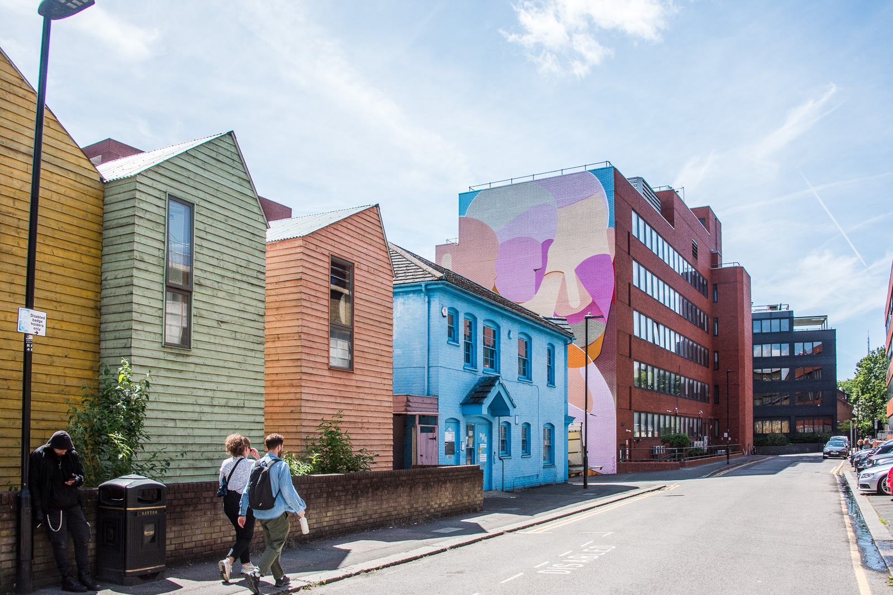

Wood Green Central:
A Placemaking Vision
Stefania and Antonio from Haringey Council's Placemaking Team are not conventional walking tour guides. They are planners and regeneration officers who have spent the last several years asking what Wood Green High Road is for — and whether it is currently doing what it should. The walk they lead is not a heritage tour. It is a report from the field: six stops through a town centre in deliberate, considered transition.
The starting point is a document. Haringey undertook a wide public consultation to develop a vision for Wood Green Central — what the council calls a place-making framework — covering six zones along and around the High Road, including a new name for the retail centre: Wood Green Central. The framework emerged from what residents said they valued, what they said was missing, and where they felt the council and its partners should focus effort. Everything the team does is anchored in that document, which has cabinet approval and therefore carries political weight.
The voices gathered through the consultation were clear on several things. The High Road has too many vacant units and too much passing-through traffic. People want more green. The connection between the High Road and Alexandra Palace — visually obvious from certain points, physically awkward on foot or by bike — needs to be improved. And young people need spaces that are genuinely theirs, not spaces that happen to tolerate them.
Five place-making zones are being worked on, one of which is Wood Green Central itself — focused on eleven major buildings directly opposite the station. Planning permission has been sought to redesign and develop that cluster. Everything flows from what the community said.
The Youth Hub:
Designed in Colour, During COVID
The Youth Hub opened in 2022, designed by Freehouse Architects following a design process that ran — largely online — during COVID. Young people from across the borough were involved not just in consultations but in specific decisions: the colour palette, the spatial layout, the kitchenette, the see-through glass panels. What you see is what they asked for.
The colours are deliberately bold — bright, representing the idea of a bright future. The see-through quality of the walls was a specific request: young people wanted to be visible enough that someone could intervene if needed, but not so exposed that they felt observed. The balance between safety and privacy was something they talked about seriously.
The kitchenette is prominent. It matters because many young people cannot afford food near school, and having somewhere to prepare a meal — or find one — is not a luxury. A warm meal is available here every day.
Upstairs is a recording studio, a podcast room, a space painted with murals by the young people themselves. One of the regular users explains what the hub has meant to her since she started coming at thirteen — the opportunities it opened up, the professionals and organisations she has been able to meet, the sense that her voice is taken seriously. The Youth Council meets here, with elected representatives from schools across the borough. They discuss planning, waste management, safety. Sometimes a councillor or cabinet member comes to do activities with them.
The building sits within a larger complex — a shopping centre, car park, residential — and Antonio explains that a roof garden was considered but proved structurally impossible: the old building beneath cannot bear the weight. The project for green on the roof is parked. Other ideas for the site continue to be developed.
Free Studio Time
in the Mall
The Record Shop started eleven years ago in Tottenham as a pop-up recording studio. Its founder has been based in Haringey throughout. In 2020, she proposed to the mall that they take on a former restaurant space — lights not working, floors sticky, half the size she needed but twice the size of anything she had before. The mall said yes. Haringey Council supported the proposal. She took the risk.
"How often do you get to set up a gorgeous studio in a shopping centre? Even just to say that I've done it — it was worth it."
— Founder, The Record Shop
The Record Shop's primary focus is making the music industry accessible. Free studio time, free workshops, performance opportunities, work experience. The music industry is notoriously hard to break into; the Record Shop tries to lower every financial and cultural barrier it can find. Whether you want a professional career or just want to see if music is something you love — the offer is the same.
The Breakfast Festival — run twice, in 2023 and 2025 — is a music festival held in the mall itself. It came out of the same instinct: music belongs in the places where people already are, not only in venues that require you to travel, pay and know about them in advance. The Record Shop was recently featured on the Mayor of London and TfL's Grassroots Music Venue Map — the first such venue in Wood Green to appear on it.
Being in the mall has changed the business. People who work in other mall shops hire out the live music space for birthday parties. Footfall brings in people who would never have found the studio otherwise. The model has adapted continuously. Funding is an ongoing challenge; volunteers and a committed team keep the youth programme running in the gaps between grants.
Wolf Lane & the Balcony
Putting the Green Back
The 1970s library is not a beautiful building. But it has balconies that face the High Road — long, shallow runs of space above street level — and for years those balconies were inaccessible from the library side, despite being clearly visible from below. Nefania explains what the team did about it.
Wolf Lane is a horticultural social enterprise based about ten minutes from the High Road, with particular work in food growing through an organisation called Black Roots, which focuses on involving the Black community in growing food and food production. The council worked with Wolf Lane and Black Roots to gain access to the library balcony and create a growing space there — planters, back-in access, vegetable growing, workshops with young children.
The structure for the planters was built by Blocks, a construction company from Enfield that doubles as a community enterprise — they have a warehouse where anyone can rent a workspace and make things. They designed and made the planters. The whole project is, as Antonio puts it, about putting the green back in Wood Green — a borough name that promises something the High Road itself, constrained by its infrastructure, mostly does not deliver. Trees are very difficult to plant along the main road. The balcony garden is one answer.
On the library's exterior wall, a mural by local artist Mac Doza — who has work across Haringey and recently had an exhibition at King's Cross — runs along the length of the building. The flags incorporated into the mural are shipping flags: the connection to the maritime history of trade that shaped the borough, rendered in colour on a building that otherwise offers little to look at. The mural was commissioned alongside the library and the local community. Antonio notes that when you design with the people who are going to use and live near something, they tend to look after it.
Safety, Ownership
& the New River
The underpass connecting the High Road to the residential streets beyond the railway was, until recently, narrow, poorly lit, frequently unsafe and avoided by most people who knew of an alternative route. It is also one of the only pedestrian and cycling connections between Wood Green and Alexandra Palace — the long way round is significantly longer. The underpass is the C20 cycling route.
The project to improve the underpass took ten years. Not because the design was complicated, but because of ownership. The railway runs overhead; Network Rail owns the tunnel. Getting Network Rail to commit to maintenance and improvements — specifically fixing the damp that would have undone anything the council built — took years of negotiation. Once that commitment was secured, the work happened relatively quickly.
The underpass was widened. Cyclists were separated from pedestrians and then, after it became clear that configuration was creating conflict, the separation was reversed — pedestrians on one side, cyclists on the other, following user behaviour rather than assumptions. New lighting was installed. Artist Emma Smith, working with local young people, designed sculptural seating elements inspired by the New River — the historic water channel that runs nearby and that has supplied parts of London for centuries. Each piece of sculpture contains a number representing the proportion of water in the human body. The idea was that the space should invite people to dwell rather than hurry through.
It is now one of the busiest pedestrian and cycling routes in the area. School children use it as a matter of course. The connection to Alexandra Palace — via this underpass — is one the placemaking team considers essential, and they took the new Green councillors through it the week before this tour.
The Meanwhile Project
& What Comes Next
Pitfield is a meanwhile project on a council-owned former car park site — a cluster of modular structures designed by Young Katkin Architects, housing small businesses including a café, a Sicilian ice cream shop (the owner is Italian; the project lead finds this delightful), a vintage clothing stall, and a handful of other tenants who found each other through the project and have since connected into a small network of enterprises.
The principle of meanwhile use is simple: a site is allocated for development but not yet ready to build. Rather than letting it sit empty, you activate it temporarily — affordably, flexibly, with occupants who understand they will eventually move on. Pitfield was planned as a five-year project; it has now run longer, because the site's development hasn't progressed to the point where relocation is imminent.
The council owns the land. When development does proceed, Antonio says, the intention is to find the Pitfield businesses somewhere else in the borough rather than simply dispersing them. The network that has built up between these tenants is genuinely valuable — people have started collaborations, shared equipment, referred customers to one another. That is harder to rebuild than a physical space.
One of the unexpected successes: Pitfield has hosted open-air cinema events. Not something that was planned, but something that worked — because the space is relatively sheltered, has reasonable clearance, and is big enough. Antonio notes that Wood Green does not have a great deal of open-air cultural offer. When events like this happen, people come.
The challenge Antonio identifies: the site is slightly hidden. Getting out of the station, you don't see it. One of the ongoing placemaking questions is how to make Pitfield and the spaces around it feel like somewhere worth heading towards rather than a place you stumble upon.
Studio 306 & the Art
Made in Recovery
The final stop is a building on the third and fourth floors of a council-owned block — leased to a group of artists and creative practitioners including painters, milliners, a leather saddler, filmmakers. The building has been open to artists for about a decade. The corridor outside the studios has photographs of each of the residents and what they make.
Studio 306 is not-for-profit. Its founder has a master's degree in community mental healthcare; she runs the studio specifically for people experiencing or recovering from mental illness. The offer is simple: come in, learn jewellery making, ceramics, screen printing, sewing, and in doing so, build confidence, social connection and skill. Referrals come from GPs, psychiatrists, occupational therapists, and self-referrals.
The work produced is handmade and sold from the studio — silver jewellery, ceramics, screen-printed pieces. All silver is from a reputable supplier; quality matters, the founder says, because what you make should reflect what you are worth. People have completed training courses and gone on to teach in schools. One person who came through the studio recently bought their first house.
A painter from West Africa who studied in Gambia talks about her series of thirty-three paintings called Arrival — about belonging, about crossing thresholds, about the idea that wherever you lay your feet is your soil. Her work is being shown alongside a textile artist whose weavings reference Quipu, the Andean knotted-cord accounting system, and incorporate repurposed materials — including hair — woven into mandalas and nests. The LFA theme this year is belonging. Both artists have been thinking about it independently for years.